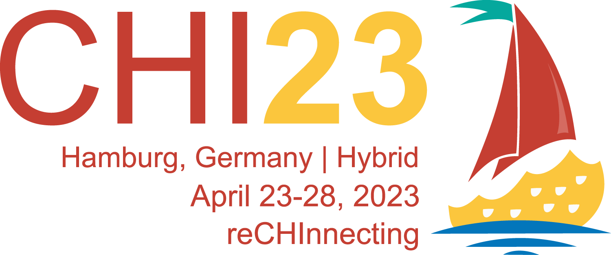

3DMovieMap: An Interactive Route Viewer for Multi-Level Buildings
30-sec Preview Video
Main Video
Abstract
We present an interactive route viewer system, 3DMovieMap, which generates and shows navigation movies walking through multi-level buildings, such as a science museum, airport, and university building. Movie map systems can provide users with visual cues by synthesizing navigation movies based on their inputs of routes. However, existing systems are limited to flat areas such as city areas. We aim to extend Movie Map to generate navigation movies for multi-level buildings. The 3DMovieMap system generates a movie map from an equirectangular movie via a visual Simultaneous Localization and Mapping technology. Users select waypoints on the floor maps. 3DMovieMap calculates the shortest path that visits these points and generates a navigation movie along the route. We created four movie maps of buildings and asked two participants to use our system and provide feedback for further improvements. We will be releasing an open dataset of equirectangular movies captured in a science museum.
Publications
Seita Kayukawa, Keita Higuchi, Shigeo Morishima, and Ken Sakurada.
2023.
3DMovieMap: An Interactive Route Viewer for Multi-Level Buildings.
In Extended Abstracts of the 2023 CHI Conference on Human Factors in Computing Systems (CHI EA 2023).
Authors
Waseda University
Preferred Networks
Waseda Research Institute for Science and Engineering
National Institute of Advanced Industrial Science and Technology (AIST)
Acknowledgements
We thank the Miraikan - The National Museum of Emerging Science and Innovation and Tokyo International Airport. This work was partially supported by JSPS KAKENHI (20H04217), JST-Mirai Program (JPMJMI19B2), and JSPS KAKENHI (JP20J23018).